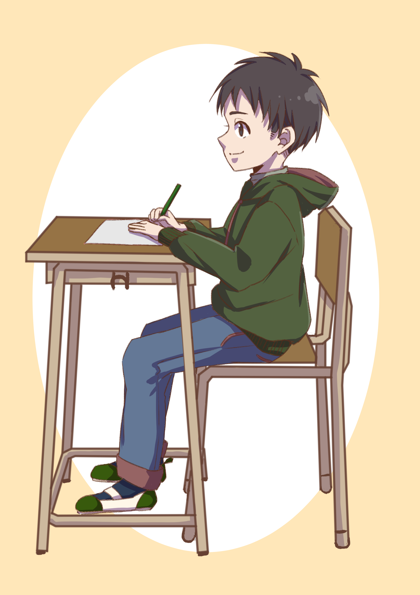

ILLUSTRATION GALLERY
My little
Illustration world.
好きなものを、かわいく、楽しく。
もえぺぽのイラスト作品を紹介します。

About me
イラストを描くことが好きです。
キャラクターイラストや、説明用のイラスト、
季節感のある作品などを制作しています。

My illustrations
作品をクリックすると、作品についての説明を見ることができます。
ILLUSTRATION 01
キャラクターイラスト
人物の表情や服装を意識した作品
ILLUSTRATION 02
座り方イラスト
人物の姿勢を分かりやすく表現
ILLUSTRATION 03
人物表現
表情とポーズの違いを表現
ILLUSTRATION 04
ポーズ比較
ポーズの違いが伝わる構成
ILLUSTRATION 05
年賀状イラスト
和風のモチーフを使った作品
03 / FAMILY NEEDS
家族のニーズに合わせた工夫
家族にも見てもらいやすいように、 作品の画像を大きく表示し、 難しい操作をしなくても内容が分かる シンプルなサイトにしました。
見やすさ
文字を大きくし、余白を多めにしました。
分かりやすさ
作品ごとに簡単な説明をつけました。
使いやすさ
作品をクリックするだけで詳細を見られます。